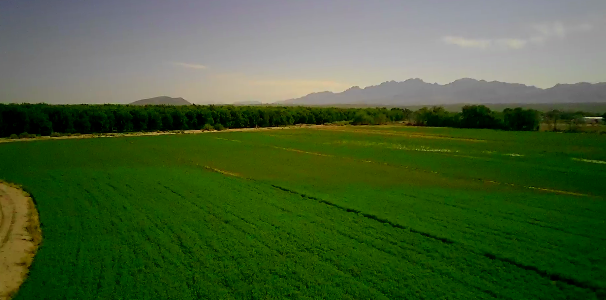
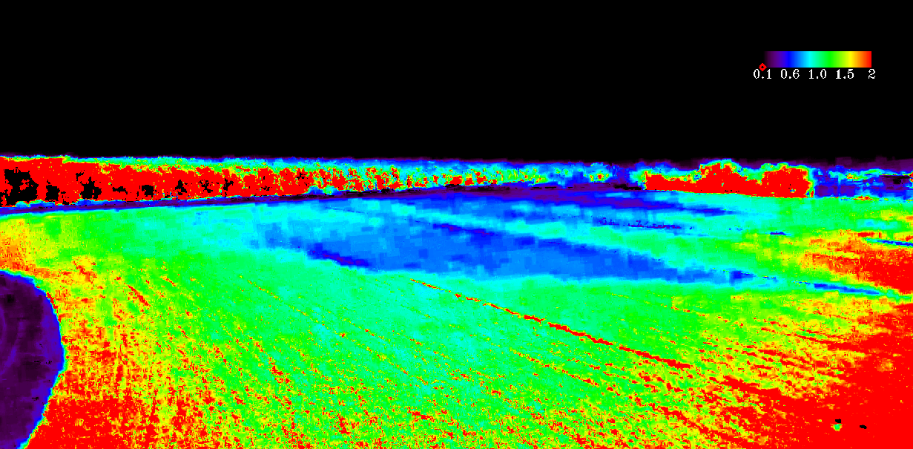

UAV Remote Sensing
UAV RGB imagery is used to provide very high spatial resolution observations of the study area. The imagery is processed to generate vegetation indices such as the Excess Green Index (ExG). ExG is useful for identifying and evaluating green vegetation using standard RGB imagery.

UAV Image Processing Results
The original RGB imagery was processed to calculate the Excess Green Index (ExG). The ExG image enhances green vegetation and facilitates comparison of vegetation conditions within the study area.


Fig. 2. Comparison of (a) the original UAV RGB image and (b) the corresponding Excess Green Index (ExG) image. Due to camera mounting configuration, the RGB image was taken at off-nadir angle. Image processing was performed using ENVI® 5.6.